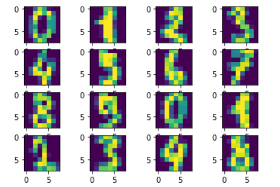

As a beginner to Machine Learning..
Getting Started
Since I am new to this field and I wanted a support ,I signed up for a course on coursera by Andrew ng which helped me to get to know concepts about the mathematics behind the Machine Learning.
Link to the courseI have completed this course till week 5,where I learned about basic math behind some great ML concepts like Linear regression,Gradient descent ,Logistic regression,Regularization,Neural networks,and some examples of them.
I also learned about different optimization functions, activation functions and hyperparameters.These things are important in getting maximum accuracy for our model,selection of correct functions and parameters is a key thing to get maximum accuracy.
Python
As python is the most feasible language to implement ML models, I explored different libraries are used in a ML program. Libraries like sklearn, pandas, matplotlib, numpy, seaborn etc.. many are used in a program which makes us easy to program and visualize a model.

Some Implementations I tried
First I tried implementing a linear regression model for pridicting a second-hand car's price given the number of years passed since its manufacure. This model gave me very bad results, so I tried it with a different dataset like predicting weight of a person given their height, this one I think it was good because it gave me good results.
Next,I have build a digit recogniser using logistic regression.This was my very first model with images and sklearn's logistic regression module helped me in this because i didn't implement the whole logistic regression function but called the help of the in-built module.

This model gave a accuracy around 95% ,and I thought that it was good enough for a small model like this.
Repo
Kaggle
This online community or platform has helped me a lot in practicing my skills on implementing models.As of now I have took part in two kaggle completetions.
1.House Price:Advanced regression
2.Digit Recogniser
During the completion of house pice prediction I learnt a lot of new things that has to be done to our data before training model i.e data preprocessing. Data Preprocessing helps to filter out our data from null values or unwanted features, it also helps us in feature selection which helps us to increase the efficiency of the model.
House Price:Advanced regression
This is my very first Neural network model which i have built using keras in python.
for the first time when I subitted my results I got a rank around 3800, to improve my rank I made some changes to my model but now it giving a gradient exploding problem where loss and accuracy are returning nan values.
Things I learnt from this project:
How to create a Neural Network model using keras, Data preprocessing, one-hot encoding and Regularization.
Repo
Digit Recogniser
This target of this project is to predict the digits which are in the form of images from MNIST dataset.I completed this task using a standard neural network which is built using keras and got a accuracy of 89%,when I submitted this score to kaggle my rank was around 2100.
Right now I am trying to implement a convolutional neural network to make predictions to get much better results.
Things I have Learnt from this project:
How to computers read images, how to preprocess image data,how to solve the problem of overfitting (initially my model was overfitting).
Repo
For the next few days I am going to work on learning CNNs, how to inceraase the effiency, accuracy of a neural network and solve the exploding gradient problem which I am facing with my House price prediction model.
What Next?
I will be continuing my journey in the field of machine learning and deep learning(Computer vision).